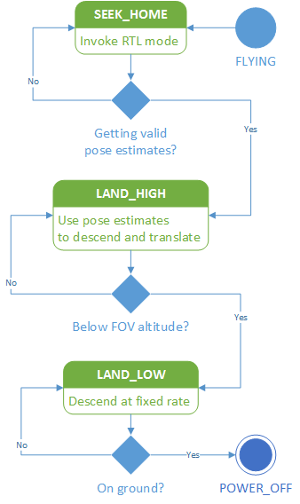
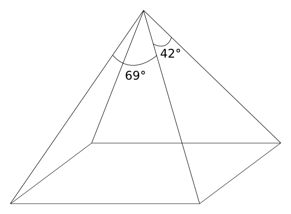

Accurate Vision-Based Landing For Multicopter UAVs
CS287: Project Presentation
Constantin Berzan, Sunil Shah
Overview
- Motivation
- Approach
- Results
- Challenges & Future
Motivation
- Automated landing
- Vision vs. GPS
- Project Aims
Automated landing
- Multicopter UAVs are gaining popularity due to:
- versatility of VTOL & ease of control
- availability of cheap IMUs
- the maker movement
- Accurate automated landing is essential to make these UAVs useful.
- Part of a larger project to build an automated charging station to mitigate short flight time of multicopters.
Vision vs. GPS
- Current open source autopilots offer GPS landing functionality.
- Accuracy of GPS landing tracks GPS accuracy, landing on average 195 cm away from the launch location.
- Vision based approaches yield much better accuracy but are not openly available or implemented beyond academic literature.
Project Aims
Our intended aims were:
- To assemble and integrate a multicopter system using the open source ArduCopter autopilot.
- To implement a pose estimator using vision.
- To implement a controller to land a UAV based on pose estimates.
- To release our implementation as open source software.
Approach
- Hardware
- Corner detection
- Pose estimation
- Landing controller
(Adapted from Sharp, Shakernia, Sastry, "A Vision System for Landing an Unmanned Aerial Vehicle", ICRA 2001)
Corner detection

Pose estimation
- Input: 24 point correspondences
- Output: camera pose (x, y, z, roll, pitch, yaw)
- Have 48 equations (2 for each point pair)
- System of equations has 6 degrees of freedom
- Solve it using an SVD trick
Landing controller

- Implemented proportional controller that overrode user control inputs, using ArduCopter's loiter mode to handle real time stabilisation of UAV.
- Current state estimates from:
- Barometric sensor for altitude
- Pose estimates
Results
- Pose estimation
- Automated landing
Pose estimation (lab)
Pose estimation (flying)
Pose estimation accuracy
| true height |
z mean |
z std |
x std |
y std |
yaw std |
| 88 cm |
89.3 cm |
0.05 cm |
0.43 cm |
0.39 cm |
0.12 ° |
| 120 cm |
121.1 cm |
0.08 cm |
1.16 cm |
1.06 cm |
0.12 ° |
| 170 cm |
172.0 cm |
0.18 cm |
2.74 cm |
2.17 cm |
0.07 ° |
| 226 cm |
229.0 cm |
0.54 cm |
6.51 cm |
6.05 cm |
0.34 ° |
Performance on the BeagleBone
- Camera is capable of 30 FPS
- Just capturing frames: 11.2 FPS
- Pose estimator running: 3.0 FPS
- Pose estimator and roscopter running: 1.6 FPS
Automated landing
- Hardware is hard.
- Noisy sensor data makes it difficult to handle state transitions when at low altitude.
- Sub-optimal flying conditions made it difficult to test our UAV landing.
Challenges & Future
- Integration
- Image quality
- Field of view
- Testing
- Future Work
Integration
- Tried 2 wifi adapters, 3 USB hubs
- Fixing camera exposure and focus
- Roscopter documentation incorrect
Image quality

Field of view

| height |
visible land area |
| 1 m |
1.37 m x 0.77 m |
| 2 m |
2.75 m x 1.54 m |
| 4 m |
5.50 m x 3.07 m |
| 8 m |
11.0 m x 6.14 m |
| 16 m |
22.0 m x 12.3 m |
Future Work
- Use higher quality optics.
- Explore landing pad design.
- Allow landing in darker scenarios.
- Use more advanced control loops (PID instead of just P).
- Rewrite roscopter in c++.
- Integrate sonar sensor for more accurate altitude estimates.